Clinical Approach to Non-Mechanical Back & Neck Pain
- Non-mechanical pain means nerves, or inflammation, fracture, viscera, infection or tumour. Disc herniation is the teaching example, but anything space-occupying (abscess, tumour, bleed, slipped vertebra) can compress a nerve.
- Radiculopathy: limb pain > axial pain in a dermatome, burning or electric, with myotomal weakness and reduced reflexes. The commonest levels are L5 and S1, and C6 and C7. Which root? Cervical roots exit above their vertebra, so a C4/5 disc hits C5. A paracentral L4/5 disc hits L5 (the traversing root); a far-lateral one hits L4.
- Most radiculopathy settles over months with conservative care. Image early for intractable pain, progressive weakness or red flags. Epidural steroids or surgery are for refractory cases.
- Lumbar central stenosis compresses roots: bilateral neurogenic claudication, eased by flexion (a shopping cart, walking uphill) and, slowly, by sitting. Cauda equina, its severe end, means saddle anaesthesia, urinary retention, fecal incontinence and weakness: an urgent MRI and decompression within 48 h.
- Cervical central stenosis compresses the cord (myelopathy): clumsy, wasted hands, gait and balance trouble, incontinence, and UMN signs below the level with a radiculopathy at the level. MRI and an urgent spine consult. Inflammatory pain improves with movement: think seronegative spondyloarthropathy.
Learning Objectives
These objectives are shared with 7.2 and 7.5. This module carries the neurologic and “everything else” half.
- Define dermatome and myotome, and outline the sensory and motor deficits expected with root pathology at C5–C8 and L3–S1.
- Define red flags for back and neck pain and what they suggest; describe the anatomical basis of common spine disorders.
- Recognize myofascial pain, SI joint pathology, mechanical back pain, spinal stenosis, cauda equina, radiculopathy and cervical myelopathy from the history and exam.
- Distinguish inflammatory from non-inflammatory back pain, and spondylosis vs spondylolysis vs spondylolisthesis.
- Develop an approach to management, investigations and treatment, of these conditions.
Dr. Charys Martin (spinal cord anatomy) and Dr. Caitlin Cassidy (clinical). Four recordings, about 42 minutes. With 7.2, this is the preparation for Friday's Clinical Anatomy of the Neck & Back lab.
Anatomy of the Spinal Cord
Dr. Martin's 13-minute anatomy recording and its knowledge-check feedback.
The Spinal Cord and Spinal Nerves
| Feature | Fact |
|---|---|
| Extent | From the brainstem (foramen magnum) to about L1/L2 in adults |
| Cervical enlargement | Cord levels C4–T1, for the brachial plexus (the whole upper limb) |
| Lumbosacral enlargement | Cord levels L1–S3, for the lumbosacral plexus (the whole lower limb) |
| Spinal nerves | 31 pairs: 8 cervical, 12 thoracic, 5 lumbar, 5 sacral, 1 coccygeal |
| Exit rule | C1–C7 exit above their vertebra and C8 exits below C7 (8 nerves, 7 vertebrae). From T1 down, every nerve exits below its vertebra. |
| Cord vs column | The cord stops growing before the column does, so it ends up in only the upper two-thirds of the canal. Lower roots travel further and further down before exiting. |
| Conus medullaris | The tapered end of the cord, just below the lumbosacral enlargement |
| Cauda equina | “Horse's tail”: the roots continuing below the end of the cord |
| Filum terminale | A slender continuation of pia from the conus to the coccyx. It anchors the cord so it can't move and pull on the roots. It is the vestigial remnant of the embryo's tail-like caudal cord. |
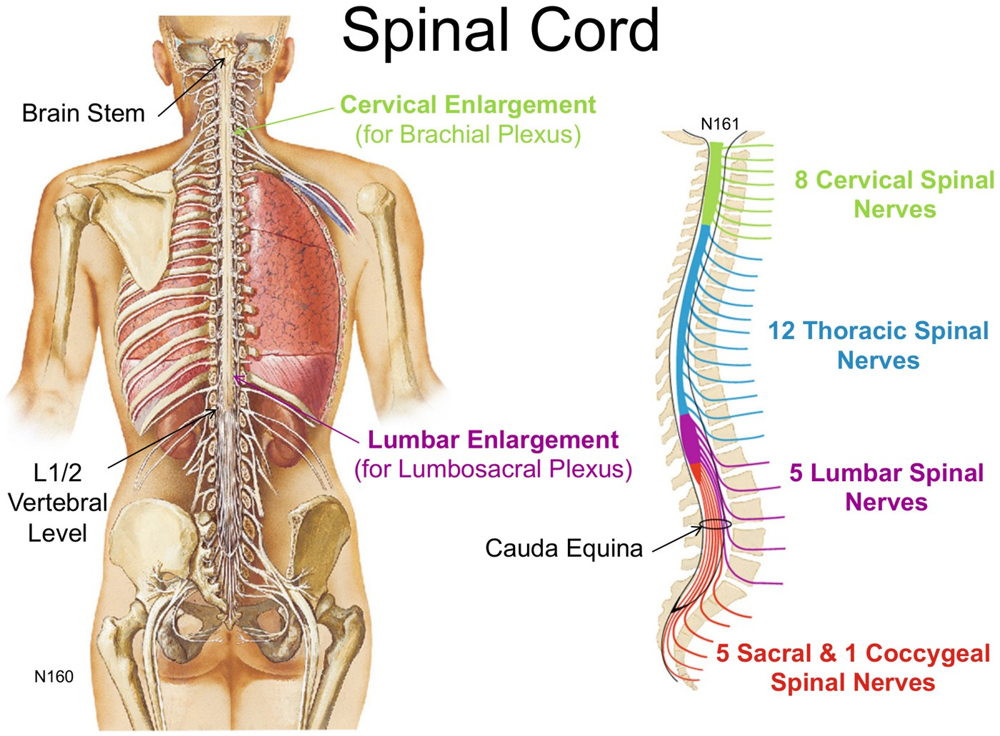
The cord ends at L1/2, but its 31 nerve pairs still exit at their own levels. The two enlargements feed the two limb plexuses. Slide from the deck (Netter).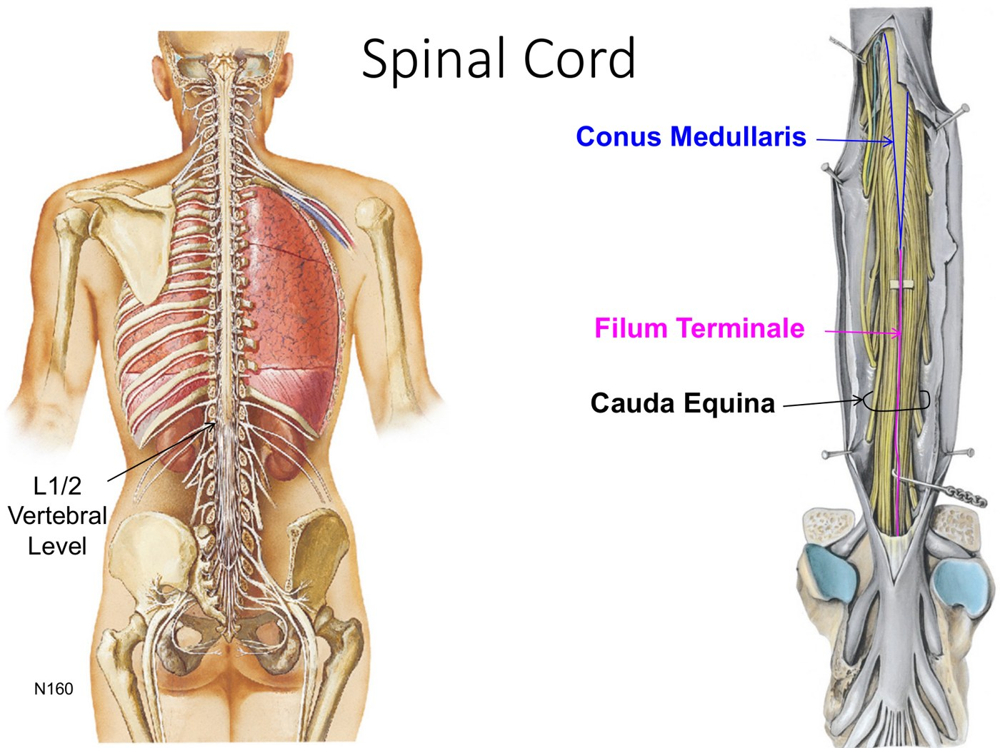
Conus, filum, cauda. The cord tapers into the conus medullaris, the filum terminale runs on to the coccyx, and the roots of the cauda equina hang around it. Slide from the deck (Netter).| Structure | Carries | Cell bodies |
|---|---|---|
| Ventral rootlets → ventral root | Motor (efferent) fibres plus presynaptic autonomic fibres | Ventral (anterior) grey horn |
| Dorsal rootlets → dorsal root | Sensory (afferent) fibres | Dorsal root ganglion |
| Spinal nerve | Mixed. The two roots join inside the intervertebral foramen. | — |
| Dorsal ramus (smaller) | Mixed. Skin of the back and the deep back muscles only. | — |
| Ventral ramus | Mixed. Everything else: both plexuses and the intercostal nerves. | — |
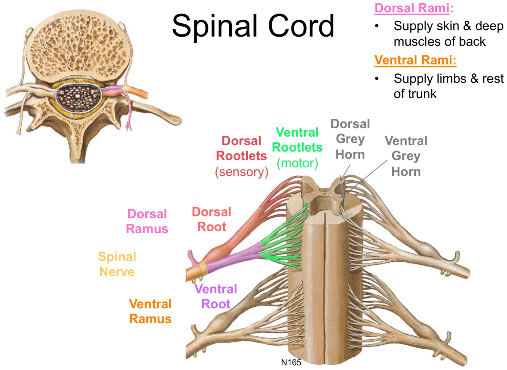
Going down the lumbar spine, the spinal nerves get bigger while the intervertebral foramina get smaller. The L5 nerve is the largest and its foramen the smallest, so the lower nerves are the most vulnerable to compression. (From the module's mini-text.)
The Meninges and the Spaces Between
| Layer or space | Key facts |
|---|---|
| Dura mater (“tough mother”) | The tough outer covering, continuous with the cranial dura. It forms the dural sac down to S2, is pierced by the spinal nerves, and is anchored to the coccyx. |
| Arachnoid mater (“web-like”) | Delicate and avascular. It encloses the subarachnoid space and is held against the dura by CSF pressure rather than attached to it. |
| Pia mater | Directly on the cord, roots and vessels. Its tooth-like denticulate ligaments anchor the cord in the dural sac, and it continues as the filum terminale. |
| Epidural space | Real, outside the dura: fat and the internal vertebral venous plexus |
| Subdural space | Only a potential space, between dura and arachnoid |
| Subarachnoid space | Real: CSF plus the cord's vessels |
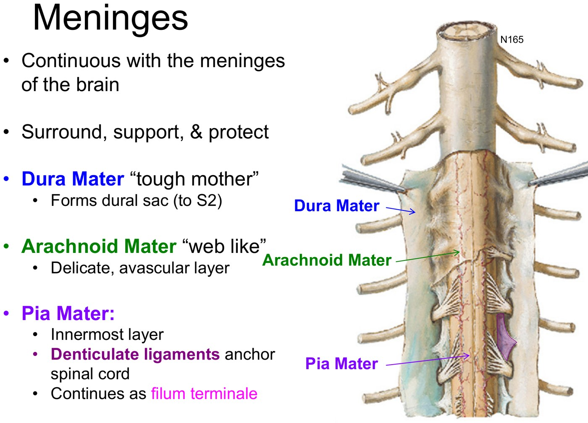
Three layers. The dura (outer, to S2), the arachnoid (pushed against it by CSF) and the pia (on the cord, with denticulate ligaments). Slide from the deck (Netter).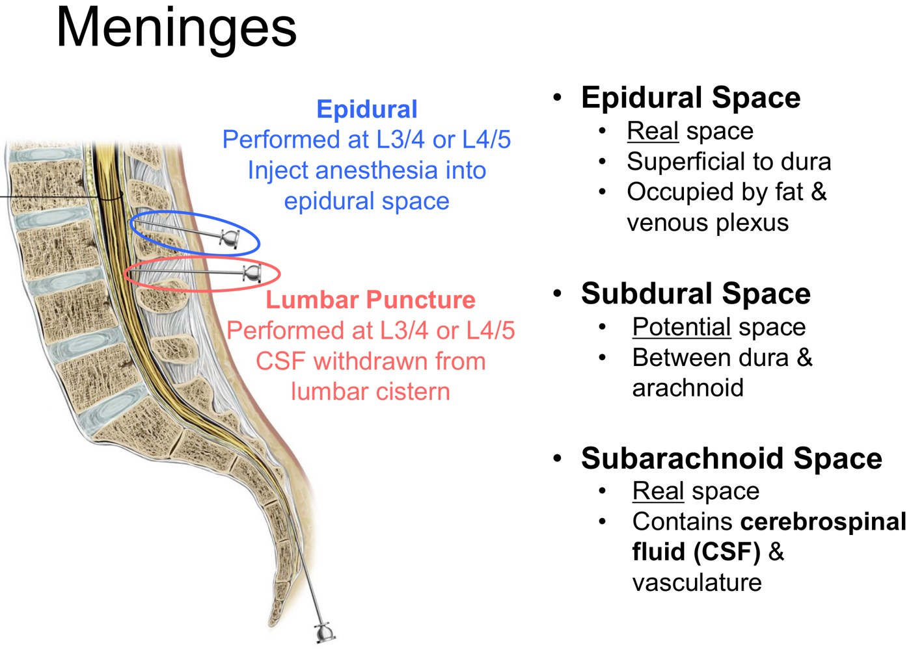
Epidural vs lumbar puncture. Both go in at L3/4 or L4/5, below the end of the cord. The epidural stops outside the dura; the LP enters the lumbar cistern. Slide from the deck.| Procedure | Where the needle goes | Why it's safe there |
|---|---|---|
| Epidural block | Anesthetic into the epidural space, around the dura. It bathes the cauda equina roots after they leave the dural sac, so sensation is lost below the block. Used often in labour. | It's done below the cord, and the needle isn't meant to enter the dura at all. |
| Lumbar puncture | Into the lumbar cistern, the enlarged subarachnoid space between the end of the cord (L2) and the end of the dural sac (S2). The patient lies on their side with the trunk flexed. | The cistern holds only the cauda equina, and its floating roots move out of the way of the needle. |
Lab knowledge check (the cadaver photo isn't reproduced here): A conus medullaris, B dorsal ramus (piercing iliocostalis on its way to the skin), C filum terminale, D cauda equina, E dura mater, pinned open.
Problems to the Side: Radiculopathy
Dr. Cassidy's neurology edition, part 1.
Radiculopathy
“Radix” = root, “pathos” = suffering or disease. It is compression or malfunction of a nerve root in or around the neural foramen, from any cause.
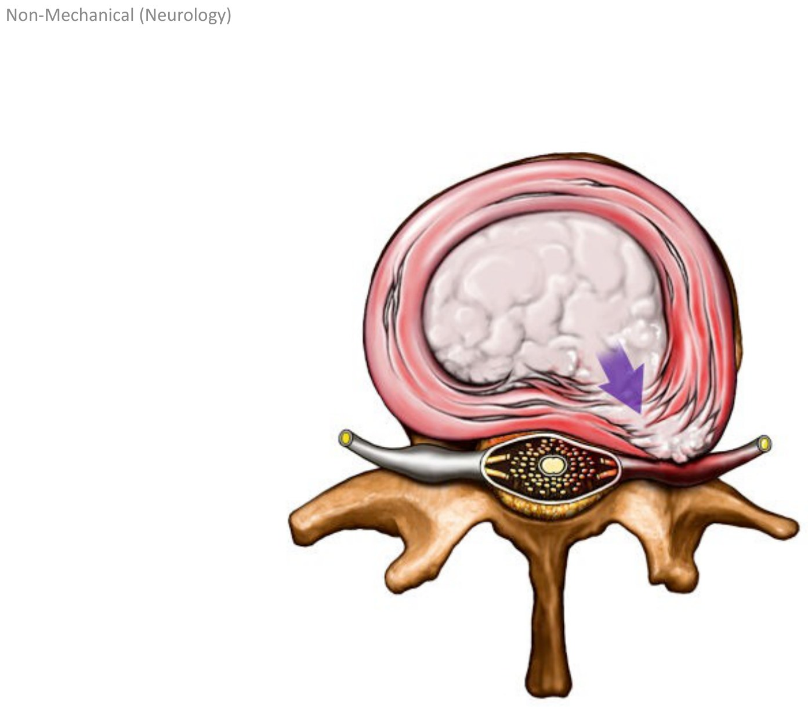
| Causes | |
|---|---|
| Degenerative: by far the most common | Disc herniation, spondylosis, ligament hypertrophy. In the lumbar spine, < 1% are anything else. |
| Everything else | Neoplasm (primary, metastases, carcinomatous meningitis), infection (abscess, TB), sarcoidosis, trauma, AVM, and diabetic neuropathy affecting the root, which is malfunction without compression |
| OLDCARS | Radiculopathy |
|---|---|
| Onset | Acute or insidious, depending on the cause |
| Location | Arm or leg > neck or back. Patients find the limb more bothersome, the reverse of mechanical pain. The pain and sensory change are in a dermatome. |
| Character | Neuropathic: burning, tingling, electric shocks |
| Alleviating | Positions that take tension off the nerve: the arm resting overhead, the legs curled up |
| Associated | Weakness and hyporeflexia in a myotomal pattern |
| Radiation | Along the dermatome |
| Commonest levels | Lumbar L5 and S1. Cervical C7 and C6, mostly from cervical spondylosis. |
Which Root Does the Disc Hit?
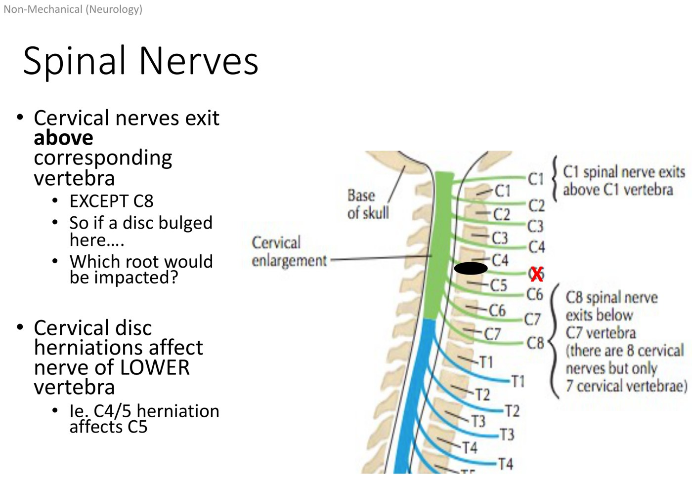
Neck: nerves exit above their vertebra (except C8), so the bulge hits the root of the lower vertebra. C4/5 → C5. Slide from the deck.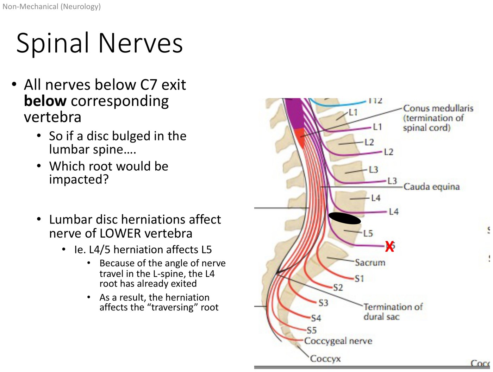
Low back: nerves exit below their vertebra, yet the answer is still the lower number. At L4/5, L4 has already left through its foramen above the disc, so a typical bulge catches L5 traversing down past it. Slide from the deck.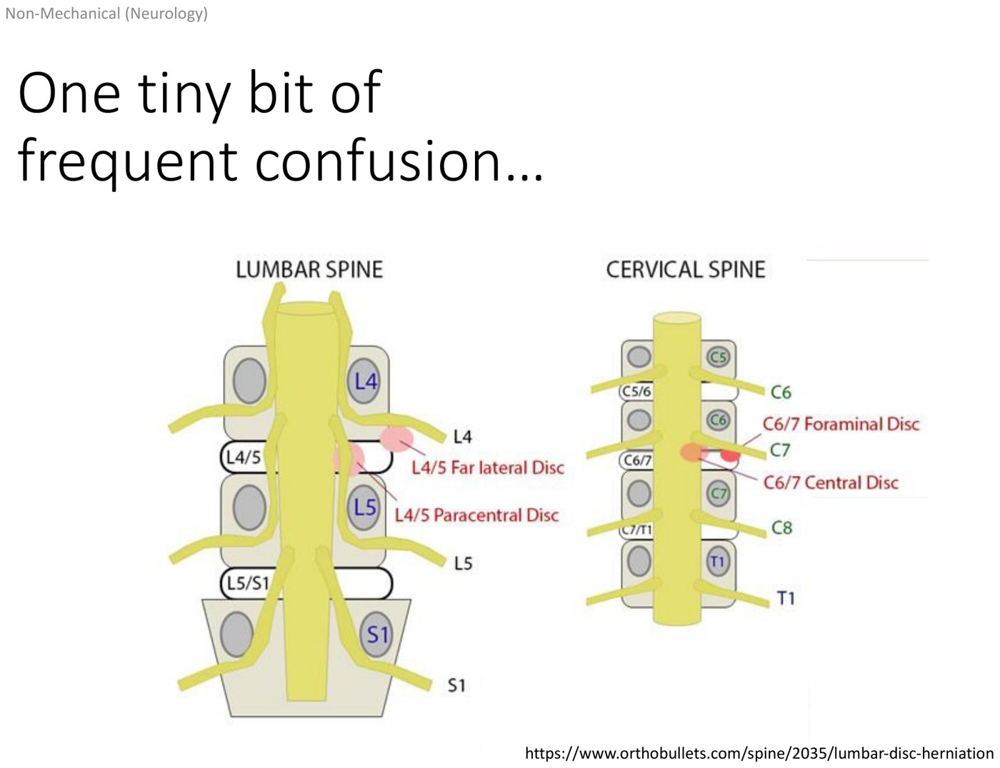
Knowledge check
A right paracentral L5/S1 herniation affects S1. The L5 root has “already left” above the disc. Only a far-lateral L5/S1 disc, which is less common, would catch L5.
Root Levels: Dermatome, Myotome, Reflex
| Root | Dermatome | Myotome | Reflex |
|---|---|---|---|
| C5 | Lateral shoulder to lateral elbow | Shoulder abduction, elbow flexion | Biceps (C5/6), brachioradialis (C5/6) |
| C6 | Lateral forearm, digits I and II | Elbow flexion, wrist extension | Biceps (C5/6), brachioradialis (C5/6) |
| C7 | Digit III | Elbow extension | Triceps (C7) |
| C8 Beyond the deck | Little-finger (ulnar) side of the hand and forearm | Finger flexion | — |
| L3 Beyond the deck | Anterior thigh down to the medial knee | Knee extension | — |
| L4 | Medial lower leg, medial malleolus | Dorsiflexion | Patellar (L4) |
| L5 | Dorsum of the foot (1st–3rd web spaces) | Great toe extension | Hamstrings (L5). Often absent normally, so compare with the other side. |
| S1 | Lateral foot, lateral heel | Plantar flexion | Achilles (S1) |
The deck's table covers C5–C7 and L4–S1. The objectives ask for C5–C8 and L3–S1, so C8 and L3 are added. Their dermatomes are read off the clinical dermatome map in 7.1, and their key muscles (finger flexors for C8, knee extensors for L3) are from the international spinal cord injury exam standard (ISNCSCI worksheet, ASIA/ISCOS). Dermatomes and myotomes overlap by design, so a single-root lesion often gives no clean patch of sensory loss, because the roots above and below still cover it.
Managing Radiculopathy
Image if there are red flags, if the neurologic impact is severe or progressing (intractable pain, progressive weakness), or if the history suggests a non-degenerative cause (e.g. infection → MRI). A mild radiculopathy improving with physio may need no imaging at all. Consider an EMG to test root function if symptoms are ongoing or severe.
Educate and reassure: even severe radicular pain usually resolves on its own over months. Use relative rest, ice or heat, topicals, oral anti-inflammatories if needed, and a short course of opioids if the pain is severe. Physio for postural support speeds recovery and prevents recurrence.
Image-guided epidural steroid injection, or surgical decompression for refractory symptoms after an adequate conservative trial, a progressive or severe deficit, or certain red-flag conditions (tumour, large abscess, trauma).
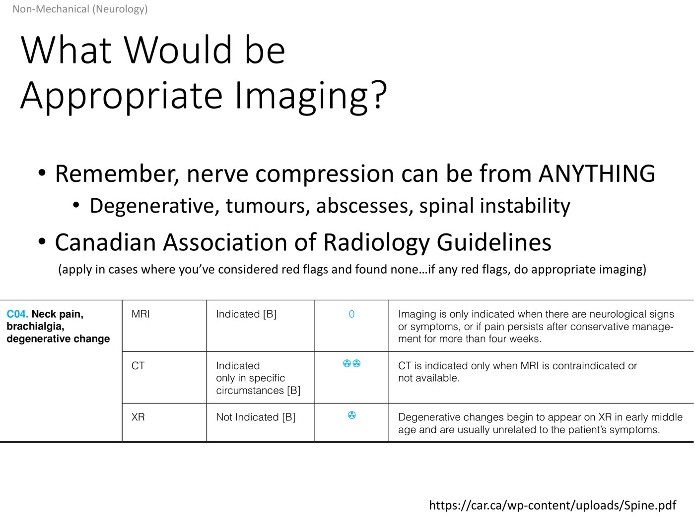
Problems to the Centre: Stenosis
Neurology edition, part 2. Location is everything.
Why the Level Changes Everything
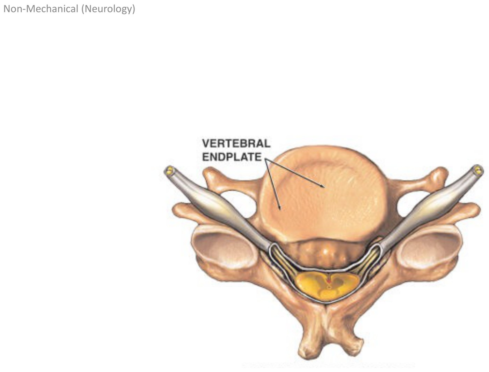
| Lumbar central stenosis | Cervical central stenosis | |
|---|---|---|
| What's compressed | Roots (the cord ends around L1) | The cord, which there is no way to avoid up here |
| Name | Lumbar stenosis, with cauda equina syndrome at the severe end | Cervical myelopathy |
| Picture | Bilateral leg symptoms, worse with walking (neurogenic claudication) | Like an atraumatic spinal cord injury |
| Imaging | Mild–moderate: none, or a non-urgent MRI. Cauda equina: urgent MRI. | MRI |
| Treatment | Flexion-based activity and physio. Cauda equina: emergency decompression. | Urgent neurosurgery or spine consult for decompression |
Lumbar Central Stenosis and Cauda Equina
| OLDCARS | Lumbar central stenosis |
|---|---|
| Onset | Typically insidious |
| Location | Legs > back (though patients often describe both), usually bilateral |
| Character | Burning, tingling, electric |
| Aggravating | Walking a predictable distance |
| Radiation | Non-specific, often distal > proximal, because the blood supply to the nerves is compressed |
| Bowel and bladder | Normal in simple stenosis |
Both cause leg pain after walking a certain distance. Neurogenic claudication is relieved by forward flexion, which takes pressure off the front of the canal. Patients say it's better leaning on a grocery cart or walking uphill. Sitting helps too, but slowly. With vascular claudication, relief comes quickly, within minutes of stopping.
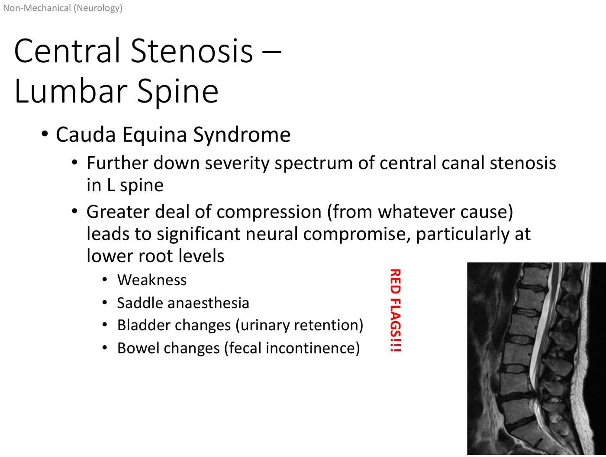
Cauda equina syndrome is the same process as stenosis, further along the severity spectrum, with the lower roots badly compromised. Slide from the deck.- Weakness, especially severe or progressive
- Saddle anaesthesia: numbness in the groin and perineum
- Bladder changes: urinary retention is the most common
- Bowel changes: fecal incontinence
- Erectile dysfunction
Cauda equina is a neurosurgical emergency. Send the patient to the ED for an urgent MRI. Outcomes are significantly better if decompression is done within 48 hours of symptom onset.
Cervical Myelopathy
| Feature | Why |
|---|---|
| Loss of hand dexterity, wasting of the hand intrinsics | Cord compression at the cervical enlargement |
| Upper limb paresthesias, distal > proximal | — |
| Urinary incontinence | Often retention with overflow |
| Gait change, ataxia, balance problems | Long tracts to the legs |
| Radiculopathy at the level plus UMN signs below it | It is hard to squeeze the cord centrally without also catching a root on its way out |
Knowledge check
A 73-year-old with chronic neck and back pain has, over 3 months, pain radiating into the thumb and index finger. She's been dropping things and breaking dishes, and has new urinary incontinence, with a UTI ruled out. → MRI of the cervical spine. Neck pain, arm radiation, loss of dexterity and incontinence together suggest cervical myelopathy. Acetaminophen, a repeat urinalysis, or plain films would each miss it.
“Everything Else”: The Red-Flag Conditions
The 9-minute red flags recording.
Inflammatory Spine Pain
| Feature | Mechanical | Inflammatory |
|---|---|---|
| Movement | Worse with movement | Better with movement and exercise |
| Rest and night | Better with rest | Worse with rest. Night pain in the second half of the night. |
| Morning stiffness | — | Significant |
| Where | Midline or paramidline | Often the SI joints |
| Review of systems | — | Eye symptoms (redness, pain), rashes, family history, enthesopathy (tendinopathy right at the tendon's insertion), other inflammatory joint pain |
| Think of | Disc, facet, muscle | The seronegative spondyloarthropathies: ankylosing spondylitis, psoriatic arthritis, IBD-associated arthritis, reactive arthritis. More in rheumatology. |
Knowledge check
Which is not a feature of inflammatory back pain? → “Worsens with movement”, which is mechanical. Morning stiffness, improvement with exercise, SI joint pain and overnight pain are all inflammatory.
Fractures, and the Three “Spondy” Words
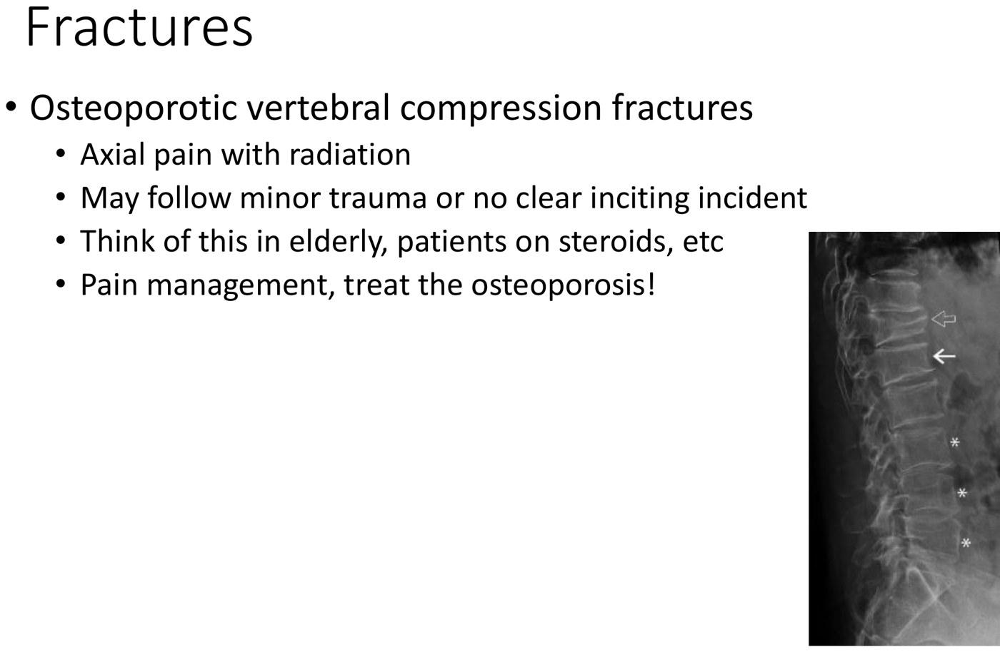
Osteoporotic compression fracture (arrow on the wedged body). It happens in older adults and patients on chronic steroids, after minor or no trauma. Axial pain may radiate, but not into the limbs unless there's neurologic compromise. Treat the pain and treat the osteoporosis. Slide from the deck.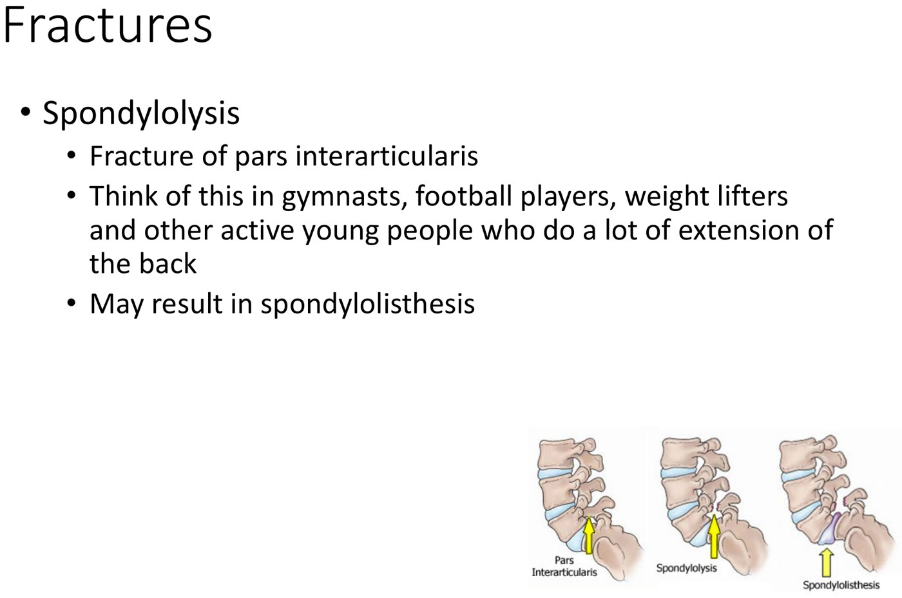
Spondylolysis: a fracture of the pars interarticularis, where the lamina meets the pedicle. It happens in young athletes who repeatedly extend the back (gymnasts, football players, weightlifters) and can lead to spondylolisthesis. Slide from the deck.| Word | Means | Typical patient |
|---|---|---|
| Spondylosis | “A state of disease”: degeneration, i.e. degenerative disc disease plus facet arthropathy | An aging spine (7.2) |
| Spondylolysis | A fracture of the pars interarticularis | A young athlete who does a lot of back extension |
| Spondylolisthesis | “Listhesis” = slipping: one vertebra slides on the next, usually forward | Degenerative (older, from facet laxity) or after a pars fracture (spondylolysis) |
Visceral Pain, Infection and Tumour
| Group | Causes | Clues |
|---|---|---|
| Cardiovascular | AAA; vertebral insufficiency; atypical cardiac pain | A pulsatile mass; dizziness and cranial nerve signs |
| GI | Peptic ulcer disease, pancreatitis, others | — |
| GU and gynecologic | Pyelonephritis, nephrolithiasis, endometriosis | — |
| Infection | Osteomyelitis, discitis, epidural abscess | Fevers, sweats, IV drug use, immunosuppression |
| Neoplasm | Bone tumour; epidural or intradural mass; drop metastases; referred pain (e.g. renal carcinoma) | Young age, severe night pain, weight loss, night sweats, cancer history, associated signs (e.g. hematuria) |
These are only found if you ask about red flags in every patient with back pain.
Putting It Together
| Red flag found | First investigation |
|---|---|
| Possible fracture | Plain films, then CT if you're still worried and the x-ray is normal |
| Significant neurologic compromise, infection, neoplasm | MRI (an x-ray may come first) |
| None | Mechanical or nonspecific pain and non-emergent neurologic pain (radiculopathy, lumbar stenosis) all start with the same conservative plan |
![Flowchart adapted from Traeger et al 2017 for the adult with low back pain: history and exam, exclude non-spinal causes (hip disease, visceral, vascular, systemic such as endocarditis, viral syndromes), then diagnostic triage into serious spinal disease (under 1 percent: vertebral fracture, metastatic disease, spinal infection, axial spondyloarthropathy, cauda equina), radicular pain and neurogenic claudication (5 to 10 percent), and non-specific low back pain (90 to 95 percent); advice and reassurance, good prognosis, no immediate imaging; then treatment boxes for radicular pain, acute non-specific and persistent non-specific low back pain.](../../../../assets/images/week-7/non-mechanical-back-neck-pain/lbp-algorithm.jpg)
Built from Dr. Charys Martin and Dr. Caitlin Cassidy's “Clinical Approach to Non-Mechanical Back & Neck Pain” module: four recordings, its knowledge checks, the 46-slide deck, and Dr. Martin's anatomy mini-text. The cadaver photo from the lab knowledge check is left out, and its answers are given in text. Added beyond the deck: the C8 and L3 rows (dermatomes from the course's dermatome map, key muscles from the ISNCSCI worksheet), because the objectives ask for C5–C8 and L3–S1 but the slide table stops at C7 and starts at L4. Caption corrections: radiculopathy (“ridiculous apathy”), conus medullaris (“CONUS Majlis”), filum terminale (“phylum terminal”), cauda equina (“court a coin”, “Korda quintet”), dura mater (“Durham matter”), denticulate (“dented”), herniation (“discrimination”, “creation”), paracentral (“Parris Central”), far lateral (“FA lateral”), claudication (“coordination”, “quantification”), cauda equina syndrome (“Cauda equine”), myelopathy (“by allopathy”, “myopathy”), ataxic (“a toxic”), SI joints (“side joints”), seronegative spondyloarthropathy (“zero negative respond to low earth”), spondylolysis (“spondylitis”), pars interarticularis (“pass in particular aureus”) and intradural (“intradermal”). The recording also calls the ventral rootlets “motor afferent”; they are motor efferent.